In this lesson, I am going to show you how you can setup the Java 11, how to install IDEA and how to make your first program.
First of all, we need a JDK. JDK is a tool for develop programs on Java lang.
I am going to use the latest version of JDK 11.
Let’s go to official website - https://jdk.java.net/11/ Important, you have to use OpenJDK, because Oracle JDK right now is a commercial product. You don’t need it.
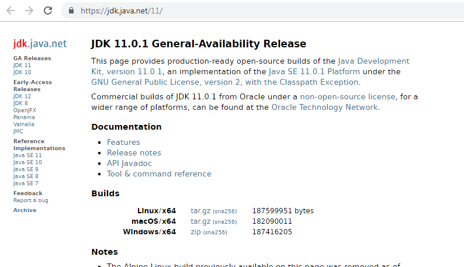
Then, you need to choose your OS. In this course, I use Windows 7 in all lessons.
OpenJDK is distributed as zip archive, so you don’t need to install it.
When you downloaded the archive you need to unpack it to any folder.
I recommend you to create a directory – “C:\Tools” and unpack the JDK archive to there, like I did it.
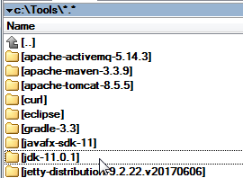
Now you need to tell your OS that you have a Java.
You need to go to My Computer > Properties > Advanced
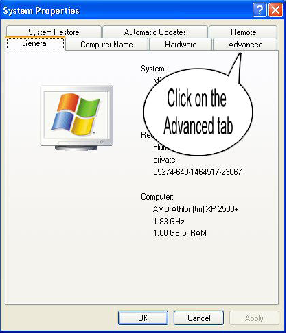
Then you need to click on Environment variables.
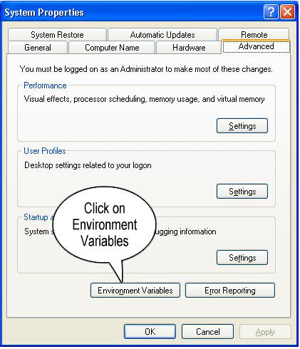
Then you need to add a new system variables.
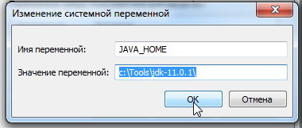
JAVA_HOME = c:\Tools\jdk-11.0.1\
Then you need to change the PATH variable.
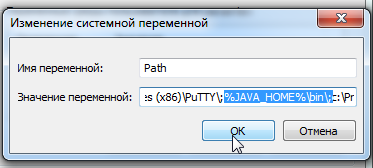
You need to add the text at the end of your values in this variable ;%JAVA_HOME%\bin
That is all. Right now you need to click OK and We can check your configuration.
For this reason you need to open command prompt.
Go to Main – Search – Type command prompt.
You need to execute follow command in command prompt
echo %PATH%
This command shows the value of PATH variable. How you can see on my screenshot it shows that I setup the JDK correctly.
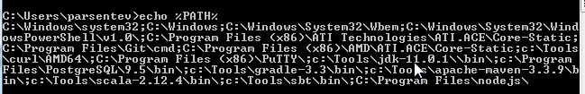
echo %JAVA%
java --version
javac --version.
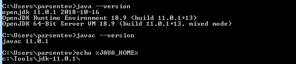
The command ‘java’ runs Java Virtual Machine. We will use it to run your program.
The command ‘java’ needs to compile your source code to bity-code.
Installing IDEA
Right now we can go to the next step. it is to install the IDEA.
IDEA is a tool to develop program on Java lang.
Let’s go to official website and download the latest version of this tool.
https://www.jetbrains.com/idea/download/
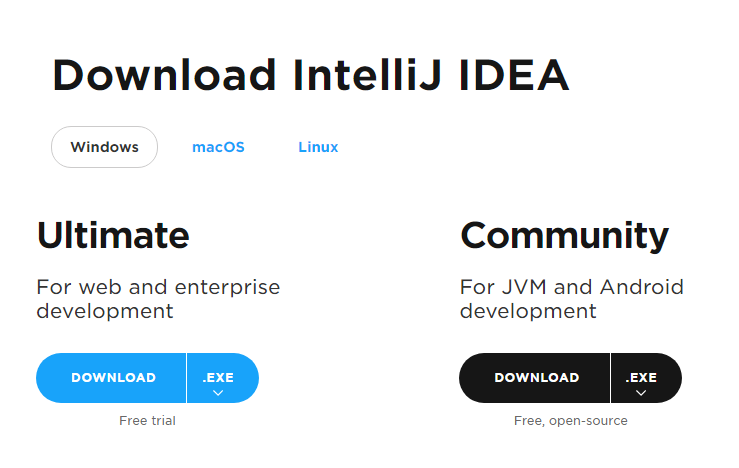
There are two versions. One of it is a free. It is a community version. In this course, I will use only community version for all lessons.
You need to click on download button and just wait when a download process starts.
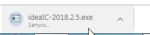
After you finished the downloading you need to install IDEA.
Now you need double-click on exe file and install process runs.
You need just lick next on such dialogs.
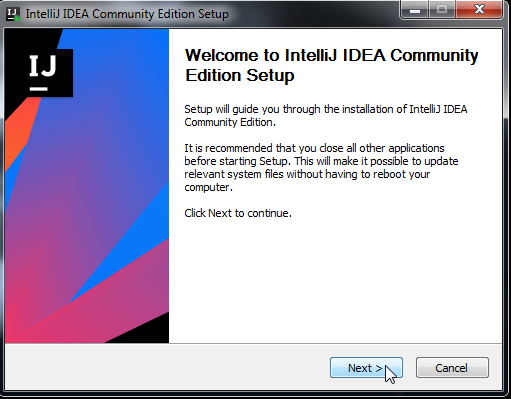
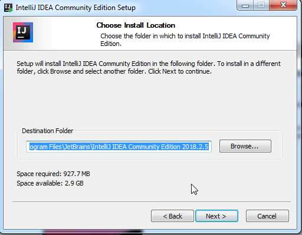
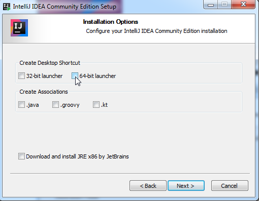
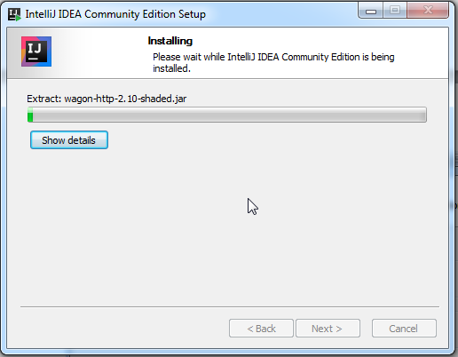
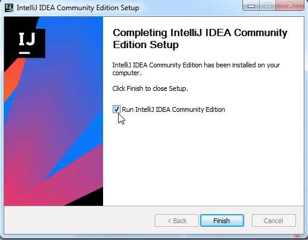
After you install IDEA you can see such screen.
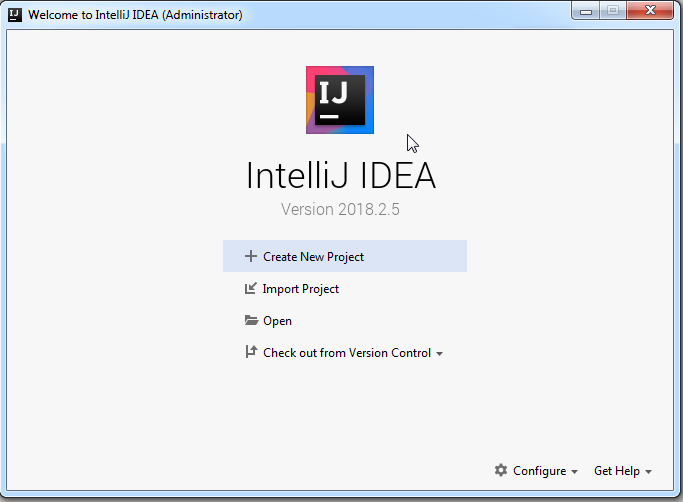
Let’s create a new Project.
You need to click on ‘Create New project’.
Here you need to select the JDK, You need to click on ‘New’ button
and select the directory with JDK 11.
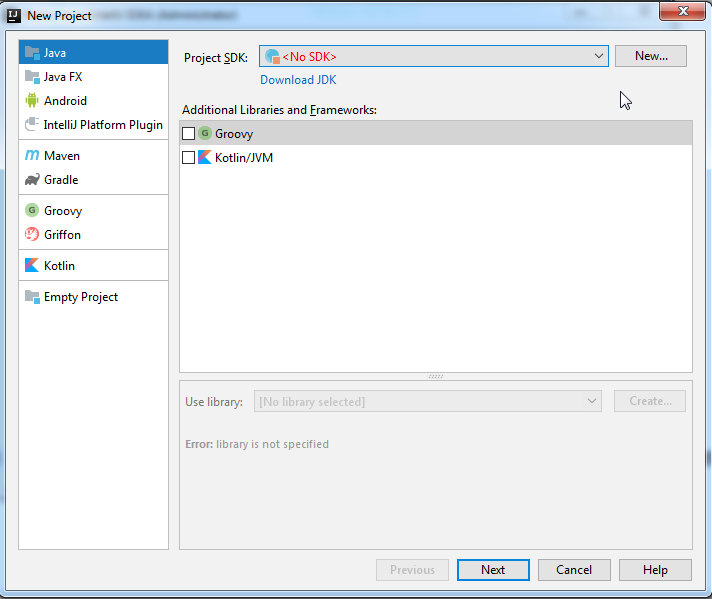
I did it in a directory ‘C:\Tools\JDK-11.0.1’
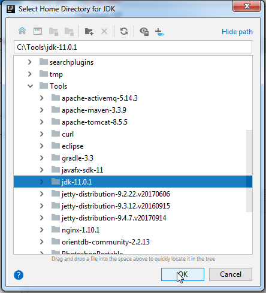
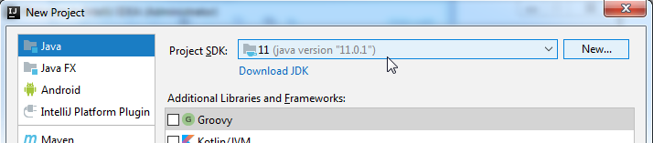
Then let’s create the new project from template. I choose ‘Java Hello world’
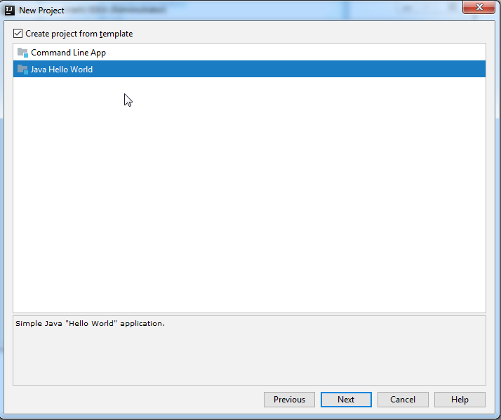
Then you need to choose the directory where IDEA will create the source code. I recommend you to use ‘C:\projects\job4j’ for this aim.
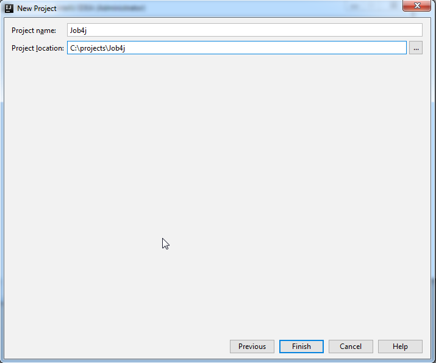
When you click on Finish button, IDEA starts to initialize your project. First time, It can take a few minutes. Just wait when it finish.
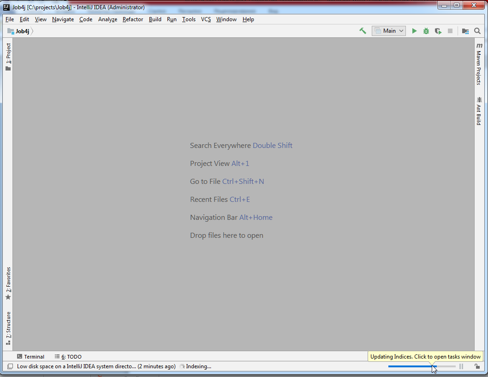
After IDEA finished the initialization process you can open the file src/Main.java.
This is our first program.
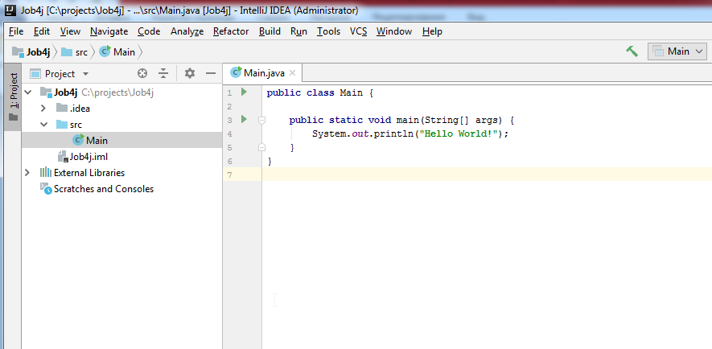
Let’s compile and run it. You need to click on green button and choose Run ‘Main.main()’. IDEA compiles and run the code.
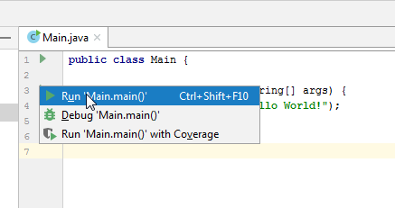
IDEA opens the console where you can see the result of your first program. It prints ‘Hello World’.
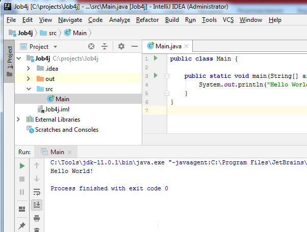
Exercises.
1. Download and setup JDK 11.
2. Download and install IDEA.
3. Compile and run ‘Hello world’ program.
4. Put the screenshot with output of ‘Hello world’ program under with video.
References
Head First Java, 2nd Edition by Bert Bates, Kathy Sierra